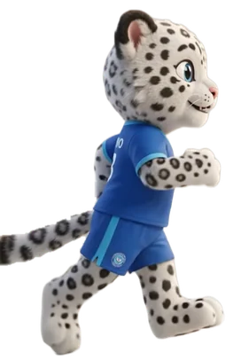

Матвей
Грицик
Портфолио достижений
за второй курс
Опыт складывается
в возможности.
Учёба, проекты и люди —
то, что помогает сделать первый шаг.

Портфолио достижений
за второй курс
Учёба, проекты и люди —
то, что помогает сделать первый шаг.